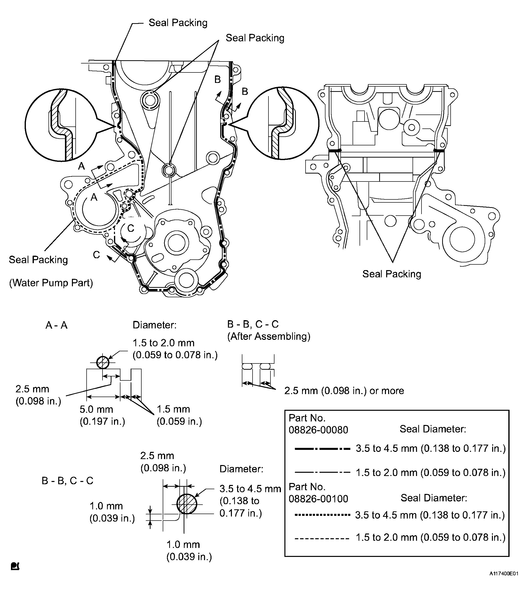

Oil Pump: Installation
- INSTALL TIMING CHAIN COVER (OIL PUMP)
- Install 2 new O-rings onto the 2 locations as shown in the illustration.
- Remove any old packing material from the contact surface.
- Apply seal packing to the timing chain cover, cylinder head and cylinder block as shown in the illustration.

Courtesy of © TOYOTA, LICENSE AGREEMENT TMS1002Seal packing:
Water pump part: Part No. 08826-00100 or equivalent
Other part: Part No. 08826-00080 or equivalent
NOTE:- Remove any oil from the contact surface.
- Install the oil pump within 3 minutes of applying seal packing.
- Do not expose the seal to engine oil for at least 2 hours after the installation.
- Align the keyway of the oil pump drive rotor with the rectangular portion of the crankshaft, and slide the oil pump into place.
- Install the timing chain cover with the 15 bolts and nut. Tighten the bolts and nut uniformly in several steps.
Torque: 24 N*m (245 kgf*cm, 18 ft.*lbf) for bolt A
11 N*m (112 kgf*cm, 8.1 ft.*lbf) for bolt B
11 N*m (112 kgf*cm, 8.1 ft.*lbf) for bolt C
24 N*m (245 kgf*cm, 18 ft.*lbf) for bolt D
24 N*m (245 kgf*cm, 18 ft.*lbf) for nut E
NOTE: After installing the oil pump assembly, the mounting bracket and water pump must be installed within 15 minutes.HINT:
Each bolt length is as follows.
30 mm (1.18 in.) for bolt A
35 mm (1.38 in.) for bolt B
20 mm (0.79 in.) for bolt C
20 to 14 mm (0.79 to 0.55 in.) for bolt D
- INSTALL WATER PUMP (See REASSEMBLY )
- INSTALL ENGINE MOUNTING BRACKET RH (See REASSEMBLY )
- INSTALL ENGINE MOUNTING BRACKET INSULATOR RH (See INSTALLATION )
- INSTALL CAMSHAFT TIMING OIL CONTROL VALVE ASSEMBLY (See REASSEMBLY )
- INSTALL CRANKSHAFT POSITION SENSOR (See INSTALLATION )
- INSTALL WATER PUMP PULLEY (See REASSEMBLY )
- INSTALL CRANKSHAFT PULLEY (See REASSEMBLY )
- INSTALL CYLINDER HEAD COVER (See REASSEMBLY )
- CONNECT NO. 2 VENTILATION HOSE (See INSTALLATION )
- CONNECT VENTILATION HOSE (See INSTALLATION )
- INSTALL IGNITION COIL (See INSTALLATION )
- INSTALL NO. 2 CYLINDER HEAD COVER (See INSTALLATION )
- INSTALL GENERATOR (See REASSEMBLY )
- INSTALL VANE PUMP V BELT (see INSTALLATION )
- INSTALL GENERATOR V BELT (see INSTALLATION )
- ADJUST GENERATOR V BELT (see INSTALLATION )
- ADJUST VANE PUMP V BELT (see INSTALLATION )
- INSPECT DRIVE BELT TENSION (See ON-VEHICLE INSPECTION )
- INSTALL FRONT WHEEL RH
- INSTALL OIL PAN DRAIN PLUG
- Clean and install the drain plug with a new gasket.
Torque: 37.5 N*m (382 kgf*cm, 28 ft.*lbf)
- Clean and install the drain plug with a new gasket.
- ADD ENGINE OIL (See REPLACEMENT )
- CHECK FOR ENGINE OIL LEAKS
- ADD ENGINE COOLANT (See ON-VEHICLE INSPECTION )
- CHECK FOR COOLANT LEAKS (See ON-VEHICLE INSPECTION )
- INSTALL ENGINE UNDER COVER RH
- CONNECT CABLE TO NEGATIVE BATTERY TERMINAL